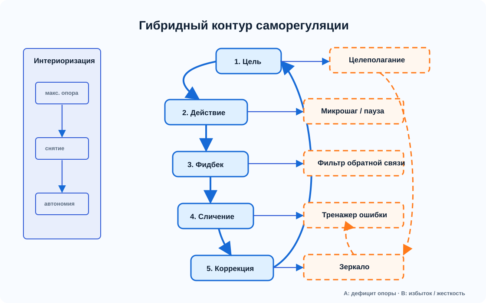
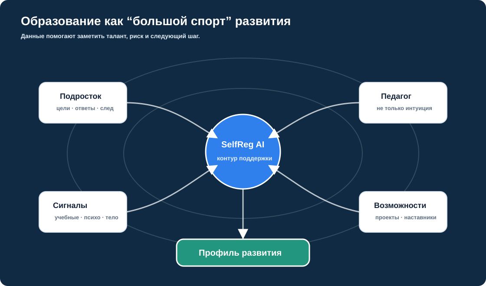

Разрыв миров — главная проблема современного взросления
Подростки живут в среде, которая плохо адаптирована как в реальной жизни, так и в цифровом пространстве. Этот разрыв усиливает кризис идентичности.
Поддержка саморегуляции
SelfReg AI — веб-инструмент для поддержки саморегуляции подростков. Короткий диалог помогает подростку уточнить цель и первый шаг, а педагог видит, где именно нужна поддержка.
Это не просто чат, а педагогический инструмент, где ИИ выступает временной опорой, а не заменой доверительного взрослого.
Смысловая рамка
Социализация и индивидуализация не должны оставаться «слепым пятном» взросления. Мы создаём пространство, где разрыв между миром детства и миром взрослых становится видимой траекторией развития. Когда естественный диалог между подростком и взрослым нарушен, искусственный интеллект выступает опосредующим звеном — помогает подростку лучше понять себя, а взрослому — вспомнить, что значит быть подростком, восстанавливая живой диалог, а не заменяя его.
Подростки живут в среде, которая плохо адаптирована как в реальной жизни, так и в цифровом пространстве. Этот разрыв усиливает кризис идентичности.
Способность самостоятельно замыкать цикл «Цель → Действие → Обратная связь → Сличение → Коррекция» формирует субъектность.
Именно он, а не технические навыки, снижает риск синдрома самозванца и позволяет безопасно взаимодействовать с ИИ.
Когда внутренний контур саморегуляции разорван, ИИ временно выступает «подпоркой», помогая подростку пройти цикл, чтобы постепенно вернуть функцию ему самому.
Искусственный интеллект не нейтрален. Без грамотного взрослого он может усиливать выученную беспомощность. Но в руках педагога и психолога становится мощным инструментом личностного роста.
Реальные отношения и деятельность всё чаще замещаются цифровыми суррогатами. ИИ не должен становиться ещё одним симулякром диалога — он должен помогать выходить за пределы цифрового пузыря.
Как когда-то социальные сети, ИИ сейчас находится на развилке: он может либо усиливать деформацию развития, либо стать инструментом формирования зрелой личности. Выбор за нами.
Ему нужен взрослый, который признаёт его взросление. SelfReg AI — это переводчик и посредник между двумя мирами, которые разучились слышать друг друга.
Почему это нужно
В школе обычно фиксируются оценки, посещаемость, дисциплина и итог работы. Но педагог редко видит, как подросток ставит цель, где застревает перед первым шагом, как переживает обратную связь и где теряет саморегуляцию. SelfReg AI собирает эти сигналы в коротком диалоге и показывает их взрослому в понятной форме.
Проблемная рамка
Школа не располагает объективными инструментами для мониторинга процессов социализации и индивидуализации. SelfReg AI предлагает ИИ-опосредованный контур, который помогает увидеть, где подросток застревает между целью, действием и обратной связью.
Усталость, тревога, интерес, попытка начать и потеря смысла часто становятся видны только после срыва или оценки.
Инструмент описывает не личность, а ход действия: цель, первый шаг, обратную связь, сравнение результата и исправление.
Персонализация требует ясного договора: какие данные собираются, кто их видит, как они помогают подростку и как сохраняется доверие.
Следующий уровень модели — физиологические и психологические сигналы: сон, нагрузка, стресс, восстановление, интерес. Это делает педагогическую поддержку точнее.
Модель
Психологическая модель описывает, где подросток теряет управление действием: в цели, первом шаге, обратной связи, сравнении или исправлении. ИИ дает временную опору в пределах этапа и помогает доверительному взрослому понять, на каком участке нужна поддержка.
Понять, что сейчас важно
Сделать первый шаг
Понять обратную связь без самообвинения
Сравнить результат с целью
Попробовать иначе
A - не хватает опоры. B - опора стала чрезмерной или жесткой. Поддержка нужна как временный мост к самостоятельности.

ИИ помогает уточнить цель, начать с маленького шага, заметить обратную связь, увидеть ошибку и выбрать мягкую коррекцию.
ИИ замедляет импульсивность, расширяет слишком узкую цель, снижает болезненность обратной связи и возвращает действие к смыслу.
Что сейчас действительно стоит выбрать как фокус?
Какое маленькое действие можно выполнить прямо сейчас?
Что в обратной связи помогает улучшить работу?
Что получилось, что мешает, что расходится с целью?
Какой новый способ стоит проверить в следующей попытке?
Исследовательская основа
Первое исследование на выборке N=82 показало сильную связь эмоционального интеллекта и саморегуляции. Дополнительное исследование N=174 подтвердило, что пик уязвимости приходится на возраст 17–23 лет. Вместе они показывают: поддержка нужна раньше, чем трудность превращается в срыв или ярлык.

нужна ранняя опора и мягкий старт
поддержка через микрошаги и наблюдение
расширение траектории и автономии
Модель выросла из исследовательской работы, осмысления подросткового возраста и сценариев поддержки по этапам саморегуляции.
Эмоциональный интеллект и саморегуляция оказываются связаны с тем, как подросток справляется с неопределенностью, обратной связью и началом действия.
Школе нужен инструмент, который помогает замечать момент, где требуется поддержка, не превращая подростка в набор оценок и показателей.
Видео и аудио
Видео последовательно раскрывает проблемную рамку, гибридную модель саморегуляции и педагогический сценарий. Аудиоверсия держит ту же линию в форме спокойного объяснения: зачем нужна поддержка, где подросток теряет опору и что должен увидеть педагог.
Проблемная рамка, пятишаговый контур саморегуляции, роль педагога и направление дальнейшего развития.
Краткое изложение проекта: почему образование плохо видит процесс взросления и как SelfReg AI переводит этот дефицит в сигнал для поддержки.
Будущее
Это только первый шаг. Дальше проект может развиваться в сторону образовательной экосистемы, где данные помогают сопровождать человека, а не только оценивать его постфактум: видеть нагрузку, интерес, восстановление и рост раньше, чем появляется срыв.
Педагог и психолог не должны работать в информационном дефиците, пока цифровые платформы легко собирают поведенческие данные. Образованию нужны свои инструменты данных: с согласием, понятной целью и человеческой интерпретацией.

Аналоги
В спорте и бизнес-аналитике уже работают с динамикой: нагрузкой, восстановлением, профилем, рисками и ростом. Для SelfReg AI важен не соревновательный принцип, а логика сопровождения: замечать развитие раньше, чем возникает провал.
Носимые устройства, видео и аналитика помогают тренерам принимать решения по нагрузке, риску и развитию спортсмена.
catapult.comПрофиль спортсмена работает как цифровое портфолио: достижения, статистика, академические данные и рекрутинг.
hudl.comСмартфонные данные, ИИ-анализ, метрики, мгновенная обратная связь и рекомендации для юных спортсменов.
spects.ioОбразовательные дашборды уже поддерживают планирование, мониторинг и рефлексию, но часто нуждаются в более строгой теоретической рамке.
arxiv.orgДля подростка
Педагогический контур
Педагог видит не только итог, а конкретный участок, на котором подростку потребовалась поддержка: ход ответов, этап саморегуляции и короткую интерпретацию для бережного следующего шага.
Безопасность
Фидбек говорит о действиях и следующем шаге, а не о “хорошем” или “плохом” ученике.
Система не выносит вердикт. Она помогает доверительному взрослому увидеть контекст и выбрать форму поддержки.
Собираются только те сигналы, которые помогают сопровождать подростка бережно, с согласием и понятной педагогической целью.
Риски
Без педагогического опосредования ИИ не решает, а усиливает кризис взросления. Он становится «мнимым Другим», создающим иллюзию поддержки, но закрепляющим делегирование мышления, выученную беспомощность и утрату авторства.
Подростки с дефицитарным кластерным профилем особенно уязвимы: им сложнее удерживать саморегуляцию, переносить обратную связь и сохранять чувство авторства. Именно им нужна более ранняя и бережная поддержка.
ИИ создаёт иллюзию диалога и поддержки, но не способен обеспечить настоящее субъект-субъектное взаимодействие.
Подросток привыкает перекладывать мышление и решение на алгоритм, закрепляя выученную беспомощность.
Стираются границы собственного «Я» — подросток перестаёт чувствовать себя автором своих действий и достижений.
Вместо интериоризации саморегуляции происходит закрепление внешней зависимости в условиях дефицита доверительных взрослых.
Компенсаторное замещение реальной социальной активности и личностного становления на «зрелищное общение» и пассивное потребление в цифровой среде. Приводит к утрате субъектности и неспособности к подлинному взрослению.